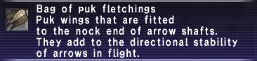

Level 75 reference · Zenith rules
| CAUTION! | ||
| File:Junction.png | This article is a personal guide. Information expressed in this guide is one player's opinion and may be more opinion than fact. Strategies and information contained herein may not work for everyone. No non-minor changes should be made without consulting the author. Changes or questions should be discussed on the talk page. |
File:Junction.png |
- Guide written by
- Zagex
- Character name
- Aranar
- Server
- Midgardsormr
I dislike farming, so this guide will be geared towards not farming. Farming is investing time to lower costs of materials. Instead of farming, I synthed more profit synths to offset costs. If you don't know how to make money, crafting is probably not for you.
Guilds
Windurst Woods is the main guild, where you turn in your test items, turn in guild point items, ask about recipes, etc. Selbina has only a guild store, and Al Zahbi has a guild store, Advanced Synthesis Image Support (for the price of 1 Imperial Bronze Piece), and Synthesis Image Support.
Items you might want to buy from guilds and their lowest prices (that I remember)
Flax Flower (187g)
Sheep Wool (675g)
Crawler Cocoon (Minimum ~120g, more often up to ~750g)
Wamoura Cocoon (~750g) (Al Zahbi) (3/day, 6 on earthsday)
Grass Thread (45g)
Cotton Thread (Minimum ~120g, more often up to ~768g)
Karakul Thread (~3k after a maintenence, more often higher) (Al Zahbi only)
Spindle (75g) (Al Zahbi and Windurst Woods)
(0-14) Grass and Cotton
- Grass Cloth (4)
- Grass Thread x 3
Buy Grass Thread from guilds. The thread should be 45g at the guild, which is only 540g per stack. Either way it's your decision, though I recommend just buying it. Sell the cloth on the AH or save it for Cape and Hachimaki.
- Sabiki Rig (6)
- Goldsmithing (21)
- Copper Ingot x 2
- Cotton Thread x 3
Sabiki Rigs do not stack and probably won't sell very quickly, which is the disadvantage to this synth. The advantage is that there is a lower net cost (and possibly a profit) compared to making Capes.
- Cape (8) (Test Item for Recruit)
- Grass Cloth x 2
- Grass Thread x 1
Synth and Desynth these. If you synth them yourself, save one for the test item. If you choose a different route, you can always buy one from various NPCs.
- Cotton Thread (11)
Generally, 2 stacks of Saruta Cotton are worth more on the AH than 1 stack of Cotton Thread, so keep that in mind if you use this synth. I would recommend getting to level 6 before using this recipe. Furthermore, if you have a lot of Saruta Cotton you could consider selling it on the AH, and buying Grass Cloth and making Hachimaki instead.
- Hachimaki (11)
- Grass Cloth x 2
Synth and desynth these. I would recommend getting to level 6 before using this recipe.
- Cotton Cloth (12)
Generally, 3 stacks of Cotton Thread are worth much more on the AH than 1 stack of Cotton Cloth, so keep that in mind if you use this synth. I would strongly recommend that this synth be avoided.
- Red Grass Thread (15)
- Red Moko Grass x 2
Red Moko Grass is only obtainable from harvesting in West Sarutabaruta, Giddeus, Bhaflau Thickets, and (I'm not sure about this) Wajaom Woodlands. It's actually fairly common from Bhaflau Thickets, though I've never harvested in Giddeus or West Sarutabaruta to compare. However, I didn't make these, and just skipped from Hachimaki to Linen Thread. It may be possible to profit off of this even if you just buy Red Moko Grass from the AH (server dependent), though if you end up breaking too many, then it becomes a hefty loss. Also, if you harvest this from Thickets, save the Mohbwa Grass, you can use it later. I would strongly recommend not starting this recipe before level 10.
- Red Grass Cloth (16)
- Red Grass Thread x 3
Sell the cloth on the Auction House, and see note from the synth above.
- Cotton Cape (18) (Test item for Initiate)
- Cotton Cloth x 2
- Cotton Thread x 1
It may be cheaper to buy this off the AH than make it yourself.
(19-30) Linen
- Linen Thread (19)
- Flax Flower x 2
Make a lot of these.
- Linen Cloth (22)
- Linen Thread x 3
Go ahead and sell the cloths once you're done.
- Moblinweave (23)
- Moblin Thread x 3
It might be worth it to make these; they're used in The Gobbiebag Part V. Check prices before attempting this, and only start this after you reach level 22 from Linen Cloth.
- Heko Obi (27) (Test item for Novice)
Synth and Desynth these, but save one to rank up when you hit level 28.
Just hope you don't lose the Manticore Hair if you break, and this should be a profitable alternative to Heko Obi if you have the Smithing subcraft. At worst, this will be a break-even synth.
Synth and Desynth, and don't bother capping all the way to 30.
If you're not gaining guildpoints for another craft and you plan to make a lot of your own threads for any reason, I'd suggets collecting 10,000 guild points and buying the Spinning key item. It lets you synth 3 threads for 1 Lightning Crystal, saving time and a little money. Of course you should generally only use the key item once you've past the skillcap.
(30-40) Wool
- Wool Thread (35)
- Sheep Wool x 2
Make a lot of these as you will need them for cloth. I would recommend buying Sheep Wool from the guild at 675g each, unless you're skilling up Leathercraft from level 2 to 4. Most likely, it is more profitable to synth 2 Sheepskin into 1 Sheep Wool.
- Wool Cloth (37)
- Wool Thread x 3
Sell your results, but don't make too many extra Wool Cloth if you plan to use the Velvet Cloth recipe using Wool Thread later.
- Feather Collar (38) (Test item for Apprentice)
I would recommend buying one of these off the AH, as it is probably cheaper than synthing it yourself.
- Mohbwa Thread (41)
- Mohbwa Grass x 2
You can get the grass from harvesting in Thickets, or buy it if it's profitable on the AH. There's no need to cap on this, as there are cheap alternatives.
- Mohbwa Cloth (4?)
- Mohbwa Thread x 3
Make it and sell it only if it's worth the investment monetarily. There's no need to cap on this, as there are cheap alternatives.
- Bird Fletchings (42)
- Bird Feather x 2
These are not worth much, and is a cheap synth to skill up on if you are not doing the Mohbwa recipes.
- Hemp Gorget (43)
- Grass Thread x 8
Grass Thread is ridiculously cheap. This is a cheap synth to skill up on if you are not doing the Mohbwa recipes. This is not worth the Lightning Crystal to desynth; just NPC it.
(40-53)Velvet and Silk
- Velvet Cloth (45)
Buying Silk Thread off the AH should still pull profit. However you probably need to make your own Wool Thread to bring a profit. I would recommend getting to level 40 before starting this recipe.
- Wool Bracers (46) (Test item for Journeyman)
These are generally not available on the AH, so you will probably have to synth your own.
- Silk Thread (51)
- Crawler Cocoon x 2
This is definitely cheaper than making the level 51 Velvet Cloth. On my server, the the cocoons are readily available from the Al Zahbi guild stores. Cocoons are available from the Windurst Woods guild also, but not the Selbina guild.
- Velvet Cloth (51)
This should be cheaper to make than the level 45 recipe.
- Silk Cloth (53)
- Silk Thread x 3
Cap at 53 on this. Skilling up higher than 53 will most likely lose you money for a while.
(53-63) First Circle of Clothcraft Hell
- Scarlet Linen (54)
I think I remember Bloodthread being inexpensive, but I might be wrong. Check the AH for your server if it's worth it to make this, and don't count on it selling too quickly.
- Karakul Cloth (57)
- Karakul Thread x 3
As long as Karakul Cloth prices on the AH aren't horribly undercut, this should be one of the cheaper things to make. However, you'll probabaly have to wait for the price at the Al Zahbi guild store to drop to cut costs. You don't have to cap this at 57 if you don't want to.
- Linen Doublet (58)
- Saruta Cotton x 3
- Linen Thread
- Linen Cloth x 4
Either Synth and Desynth these, or hope to sit around and save them until they're a guildpoint item for clothcraft, then just sell as many as possible. That's what I did, though it took months for it to become a guildpoint item enough times.
- Red Cape (59) (Test item for Craftsman)
I strongly recommend buying this off the AH.
- Hunter's Cotton (63)
This is purely a skillup item. Whatever you invest in this will be lost, not counting the minimal gil you get back from NPCing the result. If you check all three guilds enough times, most likely one of them will have cheap Cotton Thread with a decent quantity. You'll want to cap at 63 on this synth.
Carapace Powder is a level 21 Bonecraft synth made from putting 2x Beetle Shell with a Wind Crystal. I recommend plowing through the early levels of Bonecraft so you can make this yourself.
Since this is not a Bonecraft guide, I won't go too in depth. You'll only need to get to 15 or so before you can easily make Carapace Powder. Here's a quick set of synths you can pick and choose from: (3) Shell Earring, (4) Bone Hairpin, (7) Shell Ring, (9) Bone Arrowheads, (12) Bone Earring, (14) Cornette, (16) Gelatin, (17) Bone Ring, (19) Pebble.
(63-72)Second Circle of Clothcraft Hell
There isn't really much to make between 63 and 72, though it might be server dependent. You can wait to make guildpoint items for people, or just try the following:
- Wool Doublet (67) (Test item for Artisan)
- Saruta Cotton x 3
- Wool Thread
- Wool Cloth x 4
- Sailcloth (69)
This is used for upgrading Thief AF to AF+1, and to obtain Corsair AF Body Corsair's Frac. Check prices on this, it may be worth looking into.
Black Chocobo Feathers are sold in the chocobo stables of the rank 1 nation, and only if you are a citizen of that nation. The fletchings don't sell well on the AH; you'll want to cap on this, however.
(72-82) Rainbow
- Silk Cloak (77) (Test item for Adept)
It is unlikely that you'll find this on the AH for your test item, so you'll probably have to synth it yourself.
- Rainbow Thread (78)
- Spider Web x 2
This should be profitable as long as you don't buy overpriced Spider Webs or break too many. There is a cheap alternative that caps at 82.
- Rainbow Cloth (80)
- Rainbow Thread x 3
Again, profitable as long as you don't buy overpriced Spider Webs or break too many Thread. There is a cheap alternative that caps at 82.


- Puk Fletchings (82)
- Puk Wing x 2
Synth this until you cap at 82.
(82-90) Third Circle of Clothcraft Hell
The standard synths to spam at this level are Arhat's Hakama and Wamoura Silk, which both cap at 88. However, there are a few synths that you can try if they're worth it on your server.
- Master's Sitabaki (83)
- Devotee's Mitts (84)
- Arhat's Hakama (88) (Test item for Veteran)
Either sell these when they're a guildpoint item, or desynth them once you're at level 83.
- Wamoura Silk (88)
- Wamoura Cocoon x 2
You might want to consider saving the thread until you hit level 88, so you don't have to synth as much Wamoura Silk after you pass its skillcap.
- Wamoura Silk (88)
- Wamoura Hair x 2
See note above.
- Corsair's Hat (89)
The Marine Hat is sold quite often, and you might end up with a lucky HQ.
- Wamoura Cloth (90) (skillcap might be off, as there is a discrepancy between somepage and ffxicopedia)
- Wamoura Silk x 3
Capping on this would be a good idea, considering what comes ahead after this.
(90-100) Fourth Circle of Clothcraft Hell
Honestly, there aren't any great synths to do anymore. Just look at prices on your server and try to minimize loss. Some synths to consider, however don't limit yourself to these...
Adapted from Eden Wiki: Clothcraft Guide by Aranar · Contributors and history · CC BY-SA 4.0. Revision 37506. Layout, links and optional background text adapted for Zenith.